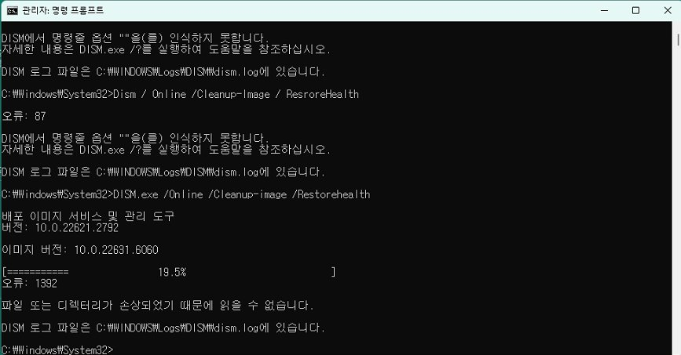

REPAIR TOOLS GUIDE
에러코드 페이지마다 나오는 그 명령어들, 여기서 한 번에 배우세요
사이트의 에러코드·증상 가이드에는 "sfc /scannow를 실행하세요", "설치 USB로 부팅하세요", "레지스트리 값을 바꾸세요" 같은 점검 항목이 반복해서 나옵니다. 이 페이지는 그 도구들이 정확히 무엇을 하는지, 어떻게 실행하는지, 결과를 어떻게 해석하는지를 한 곳에 자세히 정리한 참고 문서입니다.
아래에는 명령 프롬프트(cmd.exe, 또는 Windows 터미널)라는 검은 화면에 글자를 입력하는 방법이 여러 번 나옵니다. 이 화면은 마우스로 클릭하는 대신 글자로 명령을 내리는 창일 뿐이며, 이 페이지에 적힌 명령어만 그대로 입력한다면 안전합니다. 무언가를 잘못 누를까 걱정하지 않아도 되고, 각 도구가 "무엇을 하는 도구인지"를 먼저 쉬운 말로 설명한 뒤 실행 방법을 안내합니다.
아래 도구들은 대부분 관리자 권한이 필요하고, 일부는 실행 중 PC를 끄면 안 됩니다. 순서를 지키면 대부분의 시스템 파일·업데이트·부팅 문제를 안전하게 좁혀 나갈 수 있습니다.
1. SFC (시스템 파일 검사) — sfc /scannow
쉽게 말하면: 윈도우가 정상적으로 작동하는 데 꼭 필요한 내부 파일들이 망가지거나 사라지지 않았는지 컴퓨터가 스스로 점검하고, 문제가 있으면 자동으로 고쳐주는 기능입니다.
SFC는 Windows의 핵심 시스템 파일이 원본과 다르게 바뀌었는지 검사하고, 손상된 파일을 자동으로 복구하는 도구입니다. 블루스크린, 프로그램 실행 오류, 업데이트 실패 등 원인을 알 수 없는 문제가 있을 때 가장 먼저 시도하는 명령어입니다.
실행 방법
- 시작 메뉴에서 명령 프롬프트(cmd.exe) 또는 Windows 터미널을 검색합니다.
- 마우스 우클릭 후 관리자 권한으로 실행을 선택합니다.
- 아래 명령을 입력하고 Enter를 누릅니다.
sfc /scannow결과 해석
검사는 보통 5~15분 걸립니다. "Windows 리소스 보호에서 무결성 위반을 찾지 못했습니다"라고 나오면 시스템 파일은 정상입니다. "손상된 파일을 찾아서 복구했습니다"가 나오면 재부팅 후 증상이 해결됐는지 확인하세요. "손상된 파일을 찾았지만 복구하지 못했습니다"가 나오면 아래 DISM을 먼저 실행한 뒤 SFC를 다시 시도하세요.
2. DISM (배포 이미지 서비스 및 관리 도구)
쉽게 말하면: 앞서 소개한 SFC가 파일을 고칠 때 참고하는 '원본 백업 창고' 자체를 점검하고 수리하는 도구입니다. SFC 혼자서는 고칠 재료가 없어서 실패할 때, DISM이 그 재료 창고부터 먼저 복구해 줍니다.
DISM은 SFC가 사용하는 시스템 파일의 원본 저장소(구성 요소 저장소, WinSxS) 자체를 검사하고 복구하는 도구입니다. SFC로 해결되지 않을 때, 또는 업데이트 설치 오류가 반복될 때 사용합니다.
실행 방법 (인터넷 연결 상태에서)
DISM /Online /Cleanup-Image /ScanHealth
DISM /Online /Cleanup-Image /RestoreHealth결과 해석
ScanHealth는 손상 여부만 확인하고, RestoreHealth는 실제로 마이크로소프트 서버에서 정상 파일을 받아와 복구합니다. 완료까지 10~30분 걸릴 수 있고 진행률이 한동안 멈춘 것처럼 보여도 강제 종료하지 마세요. 복구가 끝나면 sfc /scannow를 다시 실행해 마무리하는 것이 정석 순서입니다.
오류 1392가 뜰 때
진행률이 올라가다가 중간에 "오류: 1392, 파일 또는 디렉터리가 손상되었기 때문에 읽을 수 없습니다"로 멈추는 경우가 있습니다. 아래처럼 명령 자체는 정상적으로 실행됐지만 도중에 실패한 상태입니다.

이 오류는 DISM이 참고하는 원본 저장소나 디스크 자체에 파일 시스템 손상이 있다는 신호인 경우가 많습니다. DISM을 다시 실행하기 전에 chkdsk C: /scan으로 디스크 오류부터 확인하고, 그래도 반복되면 Windows 설치 미디어(ISO)의 install.wim을 /Source 옵션으로 직접 지정해 온라인 다운로드 대신 로컬 이미지에서 복구하세요.
3. CHKDSK (디스크 검사)
쉽게 말하면: 하드디스크나 SSD 안에 저장된 파일 목록이 꼬이지 않았는지, 저장 공간 일부가 고장 나서(배드섹터) 못 쓰게 되지 않았는지 검사하고 고쳐주는 도구입니다.
CHKDSK는 디스크의 파일 시스템 구조와 배드섹터(저장장치의 일부 공간이 손상되어 더 이상 정상적으로 읽고 쓸 수 없는 상태)를 검사합니다. NTFS_FILE_SYSTEM, UNMOUNTABLE_BOOT_VOLUME 같은 저장장치 관련 블루스크린이나, PC가 갑자기 꺼진 뒤 파일이 깨졌을 때 사용합니다.
실행 방법
chkdsk C: /f /r/f는 오류 수정, /r은 배드섹터를 찾아 읽을 수 있는 정보를 복구합니다. 시스템 드라이브(C:)는 사용 중이라 바로 검사할 수 없어 재부팅 시 검사하겠냐고 물어보면 Y를 입력하고 재부팅하세요.
디스크에 물리적 결함(배드섹터)이 의심되면 CHKDSK를 실행하기 전에 중요한 파일을 먼저 백업하세요. 검사 과정에서 이미 손상된 영역의 데이터에 추가로 접근하며 상태가 나빠질 가능성이 있습니다.
4. 안전 모드 부팅
쉽게 말하면: 평소에 자동으로 켜지는 프로그램과 장치 드라이버를 대부분 꺼둔 채로, 윈도우가 켜지는 데 꼭 필요한 최소한의 기능만으로 시작하는 '진단용 모드'입니다. 마치 짐을 다 뺀 빈 방에서 문제를 찾는 것과 비슷합니다.
안전 모드는 필수 드라이버와 서비스만으로 윈도우를 시작하는 진단용 모드입니다. 안전 모드에서는 문제가 없는데 정상 부팅에서만 문제가 재현된다면, 원인이 특정 드라이버나 시작 프로그램일 가능성이 높습니다.
진입 방법
- 시작 메뉴 → 설정 → 시스템 → 복구로 이동합니다.
- 고급 시작 옵션에서 지금 다시 시작을 누릅니다.
- 문제 해결 → 고급 옵션 → 시작 설정 → 다시 시작을 차례로 선택합니다.
- 목록에서 4번(안전 모드) 또는 5번(네트워킹 사용 안전 모드)을 누릅니다.
부팅 자체가 안 되는 상황이라면, 전원 버튼으로 강제 종료를 2~3회 반복하면 자동으로 복구 환경(고급 시작 옵션)이 뜹니다.
5. 시스템 복원
쉽게 말하면: 컴퓨터의 설정과 시스템 상태를 예전 특정 시점으로 되감는 '되돌리기' 기능입니다. 사진, 문서 같은 개인 파일은 지워지지 않고, 그 시점 이후 설치한 프로그램·드라이버·업데이트만 없었던 상태로 돌아갑니다.
시스템 복원은 시스템 파일과 설정을 이전 특정 시점(복원 지점)으로 되돌리는 기능입니다. 개인 파일은 그대로 유지되고, 그 시점 이후 설치한 프로그램과 드라이버, 업데이트만 되돌아갑니다. 특정 업데이트나 드라이버 설치 직후부터 문제가 시작됐을 때 효과적입니다.
실행 방법
- 시작 메뉴에서 복원 지점 만들기를 검색해 엽니다.
- 시스템 속성 창에서 시스템 복원 버튼을 누릅니다.
- 문제가 없었던 시점의 복원 지점을 선택하고 안내에 따라 진행합니다.
시스템 복원이 표시되지 않는다면 복원 지점 만들기 기능 자체가 꺼져 있는 경우입니다. 미리 켜두지 않았다면 이 기능은 사용할 수 없으니, 평소에 시스템 보호를 켜두는 것이 좋습니다.
6. 설치 미디어(USB) 만들기
쉽게 말하면: 윈도우가 아예 안 켜지거나, 켜진 상태에서는 고칠 수 없는 문제를 고치기 위해 컴퓨터 밖에서 부팅할 수 있는 USB를 만드는 것입니다.
이 페이지의 여러 절 — 특히 바로 아래 bootrec과 오프라인 SFC/DISM — 은 이 USB로 부팅했다는 것을 전제로 안내합니다. Windows가 정상적으로 시작되지 않으면 그 안에서는 명령 프롬프트도, 설정 화면도 열 수 없기 때문에 별도의 부팅 수단이 필요합니다.
실행 방법
- 인터넷이 되는 다른 정상 PC에서 Microsoft 공식 다운로드 페이지에 접속해 Media Creation Tool(미디어 생성 도구)을 받습니다. 검색엔진에 "Windows 11 다운로드"로 찾으면 Microsoft 공식 페이지가 상단에 나옵니다.
- USB 메모리(8GB 이상)를 그 PC에 꽂습니다. USB 안의 기존 파일은 모두 지워지므로 미리 백업하세요.
- 다운로드한 도구를 실행하고 다른 PC용 설치 미디어 만들기를 선택합니다. 언어·에디션·아키텍처는 권장 옵션 사용으로 두면 됩니다.
- 미디어 종류에서 USB 플래시 드라이브를 선택하고 완료될 때까지 기다립니다. 인터넷 속도에 따라 20~40분 정도 걸립니다.
- 완성된 USB를 문제가 있는 PC에 꽂고 재부팅합니다. 부팅 초반에 제조사별 키(F12·F2·Esc·Del 등)를 눌러 부팅 순서에서 USB를 선택하세요.
문제가 있는 PC가 원래 Windows 10이었다면 11용이 아니라 10용 다운로드 페이지에서 미디어를 만들어야 합니다. 버전이 맞지 않으면 일부 복구 기능이 제대로 동작하지 않을 수 있습니다.
7. bootrec — 부팅 복구 명령어
쉽게 말하면: 윈도우가 켜질 때 "내 부팅 파일이 어느 디스크, 어느 폴더에 있는지" 적어둔 안내표(BCD)가 망가졌을 때, 그 안내표를 다시 만들어주는 명령어입니다. 이 안내표가 없으면 컴퓨터는 윈도우가 설치되어 있어도 어디서 시작해야 할지 몰라 부팅 자체를 못 합니다.
bootrec는 부팅 정보(BCD, Boot Configuration Data)가 손상되어 윈도우가 아예 시작되지 않을 때 사용하는 복구 명령어입니다. INACCESSIBLE_BOOT_DEVICE, 부팅 장치를 찾을 수 없음 같은 코드에서 사용합니다.
실행 방법
- 설치 미디어(USB)로 부팅하거나 자동으로 뜨는 복구 환경에 진입합니다.
- 문제 해결 → 고급 옵션 → 명령 프롬프트를 선택합니다.
- 아래 명령을 순서대로 입력합니다.
bootrec /fixmbr
bootrec /fixboot
bootrec /scanos
bootrec /rebuildbcd/rebuildbcd 실행 후 감지된 윈도우 설치를 추가하겠냐고 물으면 Y를 입력하세요. 이 명령으로도 해결되지 않으면 bootrec /fixboot에서 "액세스가 거부되었습니다" 오류가 날 수 있는데, 이 경우 diskpart로 부팅 파티션을 활성으로 표시해야 할 수 있습니다.
8. Windows Update 기록 확인하고 저장하기
업데이트가 반복 실패할 때는 어떤 업데이트(KB번호)가 실패했는지, 어떤 오류 코드가 함께 나왔는지가 원인 파악의 핵심 단서입니다.
기록 확인 방법
- 설정 → Windows 업데이트 → 업데이트 기록으로 이동합니다.
- 실패로 표시된 업데이트의 KB번호를 확인합니다.
- 더 자세한 오류 코드가 필요하면 이벤트 뷰어에서 Windows 로그 → 시스템 → 원본 WindowsUpdateClient를 필터링합니다. (이벤트 뷰어 사용법은 이벤트 뷰어 확인 방법 페이지를 참고하세요.)
이 정보를 기록해두면, 검색하거나 문의할 때 "업데이트가 안 돼요" 대신 "KB50XXXXX 설치가 0x800f0922로 반복 실패합니다"처럼 훨씬 정확하게 원인을 좁힐 수 있습니다.
9. 드라이버 롤백과 완전 제거
쉽게 말하면: '드라이버'는 그래픽카드·랜카드 같은 하드웨어와 윈도우가 서로 대화할 수 있게 해주는 번역기 프로그램입니다. 이 번역기를 최신 버전으로 바꾼 직후부터 문제가 생겼다면, 이전 버전 번역기로 되돌리는 것이 가장 빠른 해결책일 수 있습니다.
드라이버 업데이트 직후 블루스크린이나 장치 오류(코드 43 등)가 시작됐다면, 최신 드라이버가 아니라 이전 드라이버로 되돌리는 것이 가장 빠른 해결책일 수 있습니다.
롤백 방법
- 장치 관리자를 엽니다 (시작 메뉴에서 검색).
- 문제가 되는 장치를 찾아 더블클릭 → 드라이버 탭을 엽니다.
- 이전 드라이버로 롤백 버튼이 활성화되어 있으면 클릭합니다.
롤백 버튼이 비활성화되어 있다면(이전 버전 기록이 없는 경우) 대신 드라이버를 완전히 제거한 뒤 제조사 홈페이지에서 이전 안정 버전을 받아 설치하세요. 그래픽 드라이버는 DDU(Display Driver Uninstaller) 같은 전용 클린 제거 도구를 안전 모드에서 사용하면 잔여 파일까지 깨끗하게 지울 수 있습니다.
10. 메모리 진단 도구
쉽게 말하면: 컴퓨터가 작업 중 임시로 정보를 올려두는 '램(RAM)'이라는 부품이 불량은 아닌지 검사해주는 윈도우 기본 도구입니다. 램이 불안정하면 겉보기에는 전혀 상관없어 보이는 다양한 블루스크린이 나타날 수 있습니다.
램 불안정은 MEMORY_MANAGEMENT, PAGE_FAULT_IN_NONPAGED_AREA 같은 다양한 블루스크린 코드의 공통 원인입니다. 윈도우 기본 메모리 진단 도구로 1차 점검이 가능합니다.
실행 방법
- 시작 메뉴에서 Windows 메모리 진단을 검색해 엽니다.
- 지금 다시 시작하고 문제 확인을 선택합니다.
- PC가 재시작되며 자동으로 검사가 진행됩니다 (약 10~20분).
검사가 끝나면 자동으로 재부팅되고, 로그인 후 알림으로 결과가 표시됩니다 (표시되지 않으면 이벤트 뷰어에서 원본 MemoryDiagnostics-Results를 검색하세요). 더 정밀한 검사가 필요하면 MemTest86 같은 부팅 전용 도구로 몇 시간 이상 반복 검사하는 것이 좋습니다.
11. 레지스트리 편집기 사용법
쉽게 말하면: 윈도우의 모든 세부 설정이 저장된 데이터베이스를 직접 열어서 특정 값을 바꾸는 것입니다. 잘못 건드리면 윈도우가 아예 켜지지 않을 수도 있어, 안내받은 경로와 값만 정확히 따라야 합니다.
이 사이트의 일부 페이지가 안내하는 조치(서비스 응답 대기 시간 조정, 인증서 자동 업데이트 설정 변경 등)는 실제로 이 도구로 적용합니다. 페이지에 적힌 경로와 값만 그대로 따라가고, 관련 없는 다른 키를 둘러보며 임의로 수정하지 마세요.
실행 방법
- 먼저 백업합니다. Win + R →
regedit입력 → Enter → 권한 확인 창에서 예를 누릅니다. 열리면 메뉴의 파일 → 내보내기로 전체 레지스트리를.reg파일로 저장해 둡니다. 문제가 생기면 이 파일을 더블클릭해 되돌릴 수 있습니다. - 창 위쪽 주소 표시줄에 안내받은 전체 경로(예:
HKEY_LOCAL_MACHINE\SYSTEM\CurrentControlSet\Control)를 그대로 붙여넣고 Enter를 누릅니다. 왼쪽 폴더 트리를 한 단계씩 눌러 내려가는 것보다 빠르고 정확합니다. - 오른쪽 목록에서 안내받은 값 이름을 찾아 더블클릭합니다. 그 이름이 목록에 없다면, 빈 곳에서 마우스 우클릭 → 새로 만들기 → 안내받은 종류(대부분 DWORD(32비트) 값)로 새로 만듭니다.
- 데이터 값 칸에 안내받은 숫자를 입력하고 확인을 누릅니다. 별다른 안내가 없으면 10진수 기준으로 입력하면 됩니다.
- 편집기를 닫고 PC를 재부팅합니다. 대부분의 레지스트리 값은 재부팅 후에 적용됩니다.
이 사이트가 구체적으로 안내하지 않은 경로나 값은 스스로 판단해서 만들지 마세요. 실수로 잘못된 값을 넣으면 부팅이 안 될 수 있으며, 이 경우 1단계에서 만든 백업 파일을 불러오거나 위 시스템 복원으로 되돌려야 합니다.
결과를 기록하고 공유할 때 주의사항
위 도구들의 결과를 캡처하거나 복사해서 다른 사람에게 보여줄 때는 컴퓨터 이름, 사용자 이름, 파일 경로, 제품 키 같은 개인 정보가 포함되어 있지 않은지 먼저 확인하세요. 특히 이벤트 뷰어의 XML 보기나 명령 프롬프트 출력에는 폴더 경로에 실제 사용자 이름이 그대로 노출되는 경우가 많습니다.
안전 모드에서 재현 여부 확인 → SFC → (해결 안 되면) DISM → 다시 SFC → 그래도 안 되면 시스템 복원 → 부팅 자체가 안 되면 bootrec → 저장장치 관련 코드면 CHKDSK → 드라이버 관련이면 롤백 또는 클린 재설치 순으로 진행하면 대부분의 원인을 좁힐 수 있습니다.